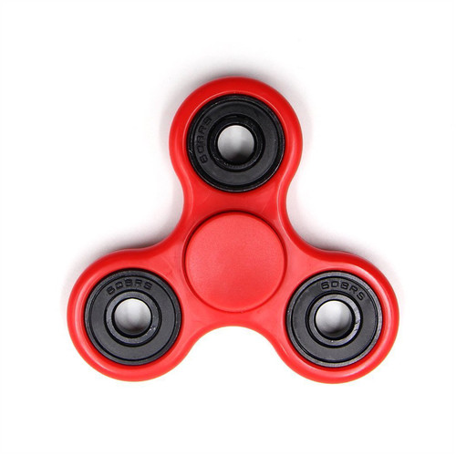
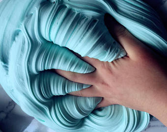

De senaste trenderna.
På youtube i toppen så hittar vi Jocke och Jonnas video med Riley där dom testar USA godis. Vi alla har nog sätt några av deras godis videor där dom testar godis då dom videorna är deras populäraste serie på kanalen ferutom spökvideorna. Min åsikt är väl att den är lite lång för att vara en testar godis video fast kvaliten är bra och jag gillar dom som personer så det är de värt.
Figet spinners...
Figet spinners var,är och förblir en av de största trenderna. Enligt mig är det som Pokemon Go. På bara några timmar lyckades dom fånga sin publiks ögon dock dog den ut efter bara några veckor då andra tränder blev större.>
.Slime.
Slime är en tränd som troligtvis inte håller ihop så länge mer. Det började som en DIY video och sedan blev det fler och fler och fler och så vidare... Hursom helst tycker jag att trenden är ganska onödig då man lägger mycket pengar på det och slimen stelnar om man inte förvarar den i en lyft tät burk. Nu så kryllar det av miljontals videos och DTY:s om hur man gör det och över 600.000 slime receptdock både fungerande och ike fungerande.